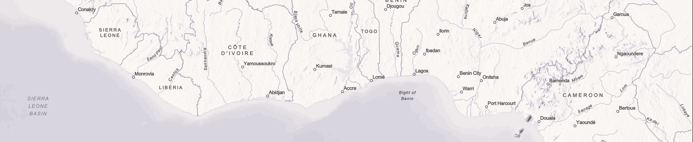
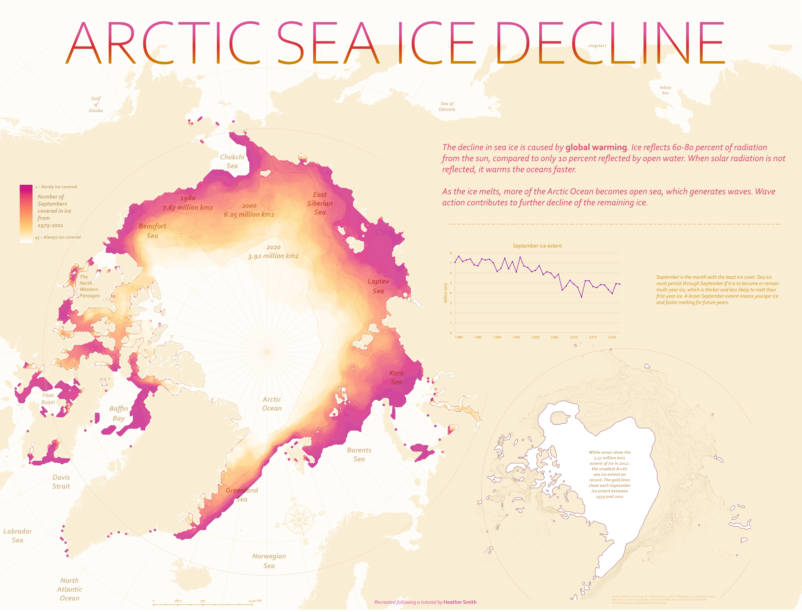
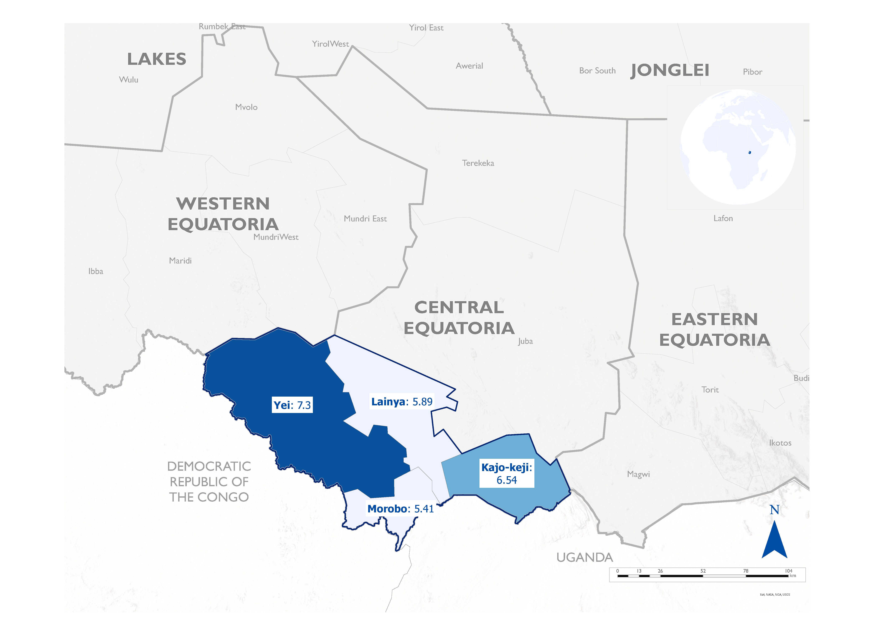

MAPS

1.0 STATIC MAPS
Arctic Sea Ice decline
Papau New Guinea

Context: Administrative Map
Tools: ArcGIS Pro
Date: January 2023
Tools: ArcGIS Pro
Date: January 2023
South Sudan

Context: Administrative
Map
## 2.0 INTERACTIVE MAPS
ArGIS Online
A Bangladesh map showing Spatial flood risk assessment in the Ganges-Brahmaputra-Meghna delta in Bangladesh
This map shows Spatial flood risk assessment in the Ganges-Brahmaputra-Meghna delta in Bangladesh. This assessment calculated flood risk using the equation; FLOOD RISK = FLOOD HAZARD x FLOOD EXPOSURE x VULNERABILITIES.(Tutorial Purpose)
The index score used ranges from 0-1. with 0 being least at risk and 1 being most at risk of floods
Somalia River Basin The River Basins in Somalia
West African cities (in Progress)
A Leaflet map to show the location of cities and their nearest cities, boarders and populations
# Load the necessary packages
library(leaflet)## Warning: package 'leaflet' was built under R version 4.2.3library(dplyr)##
## Attaching package: 'dplyr'## The following objects are masked from 'package:stats':
##
## filter, lag## The following objects are masked from 'package:base':
##
## intersect, setdiff, setequal, union# Create a data frame with the capital cities and their coordinates
west_africa <- data.frame(
country = c("Nigeria", "Ghana", "Sierra Leone", "Liberia", "Cote d'Ivoire", "Burkina Faso", "Mali", "Senegal", "Guinea-Bissau", "Guinea", "Gambia", "Togo", "Benin"),
capital_city = c("Abuja", "Accra", "Freetown", "Monrovia", "Yamoussoukro", "Ouagadougou", "Bamako", "Dakar", "Bissau", "Conakry", "Banjul", "Lome", "Porto-Novo"),
latitude = c(9.0765, 5.6037, 8.4840, 6.3106, 6.8206, 12.3714, 12.6392, 14.7167, 11.8630, 9.5357, 13.4531, 6.1319, 6.4968),
longitude = c(7.3986, -0.1870, -13.2299, -10.8047, -5.2764, -1.5330, -8.0029, -17.4677, -15.5976, -13.6788, -16.5790, 1.2221, 2.6059)
)
# Create the map using Leaflet
leaflet(west_africa, options = leafletOptions(width = "800px")) %>%
addTiles() %>%
addMarkers(
~longitude,
~latitude,
popup = ~paste(country, "<br>", capital_city, sep = "")
)